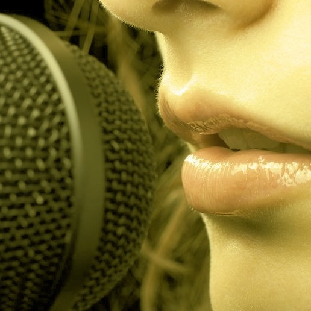
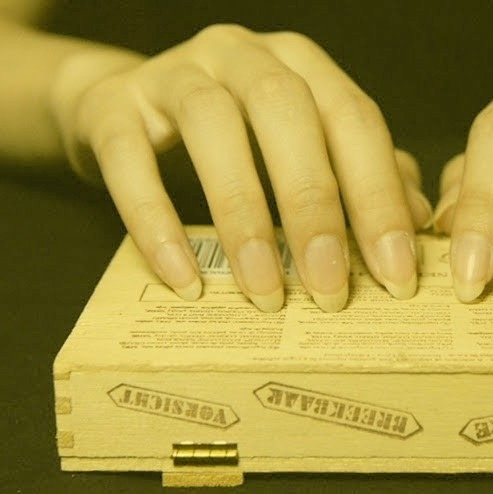
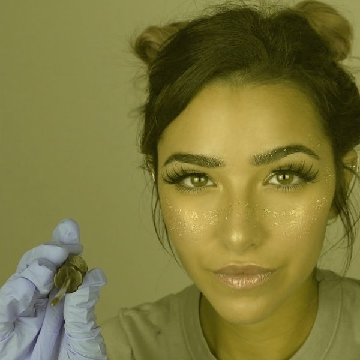

Triggers
I seguenti suoni vengono prodotti dagli Youtubers nel campo dell'ASMR per rilassare ed è consigliato, per beneficiare di essi, di indossare delle cuffie o degli auricolari.
Attraverso la voce
-
Whispering


Il whispering, in italiano "sussurro", è un trigger di tipo uditivo ed è forse quello più apprezzato in assoluto tra gli amanti dell’ASMR. Nasce dal fatto che molte persone hanno confessato di provare una sensazione di profondo relax e benessere in ambienti come ad esempio una biblioteca, caratterizzati dalla sovrapposizione di sussurri di persone che devono obbligatoriamente bisbigliare per non disturbare gli altri. Infatti, una voce sussurrata è dolce, rilassante, rassicurante, calmante e concilia il sonno.
-
Soft Spoken
Il soft spoken, che in italiano si può tradurre come "parlare piano", è sempre un trigger di tipo uditivo e si differenzia dal whispering perché dalla bocca non esce solo aria, ma anche un filo di voce. Quest’ultimo deve essere poco più che percettibile e i suoi effetti su chi ascolta sono sempre gli stessi: calma, rilassamento, una vera e propria coccola.
Attraverso l'uso delle mani
-
Tapping
Per tapping si intende il battere delicatamente delle unghie su una superficie dura (ad esempio sul tavolo): la classica immagine rappresentativa di una persona che attende qualcosa impazientemente.
Il tapping è molto amato anche in abbinamento alla sua parte visuale: vedere delle unghie curate, che fanno un delicato tap tap sul tavolo o su una superficie che permette la produzione di un suono piacevole, può rilassare anche visivamente, incantare e quasi ipnotizzare.
-
Crinkling
Si tratta di un trigger quasi esclusivamente di tipo uditivo. Crinkling, in italiano, può essere tradotto come "stropicciamento". Il crinkling paper sound, ad esempio, è il rumore della carta che viene dolcemente stropicciata, piegata e spiegata più volte, un po’ come quando accartocciamo della carta da buttar via delicatamente. La carta è infatti l’oggetto più utilizzato per produrre questo trigger, ma non è raro trovare anche video in cui si usano altri materiali più o meno maneggevoli come la carta, ad esempio alcuni tipi di plastiche (crinkling plastic), le fogle secche etc.
Altri triggers particolari
-
Mouth Sounds
Questo trigger di tipo uditivo, e in seconda parte anche visivo, è molto apprezzato e coincide con i suoni prodotti dalla lingua, infatti, il mouth sound in italiano può essere tradotto come "suono della bocca". Su Youtube sono presenti canali addirittura specializzati in mouth sound anche se molte persone hanno evidenziato la poca tolleranza nei confronti di questo trigger.
-
Roleplay

Un altro ASMR trigger molto apprezzato nella community ASMR è senz’altro il roleplay che significa letteralmente "gioco di ruolo", espressione molto usata anche nel linguaggio dei videogames, che nell’ASMR consiste nell’interpretazione di un vero e proprio ruolo.
Chi realizza video ASMR di roleplay interpreta comunemente personaggi come medico, psicologo, estetista, parrucchiere o un qualsiasi tipo di mestiere che abbia come obiettivo principale quello di prendersi cura di chi guarda il video, proprio come se fosse realmente un incontro vis-à-vis. Ciò crea una comunicazione diretta con chi guarda i video e perciò rappresenta la formula di ASMR vincente. Il roleplay è una perfetta combinazione tra inneschi di tipo uditivo e visivo, ad esempio può basarsi su un mix di whispering, soft speaking, tapping, etc.